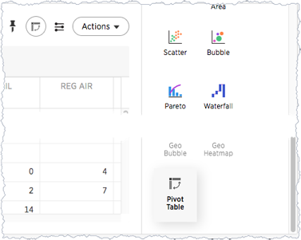
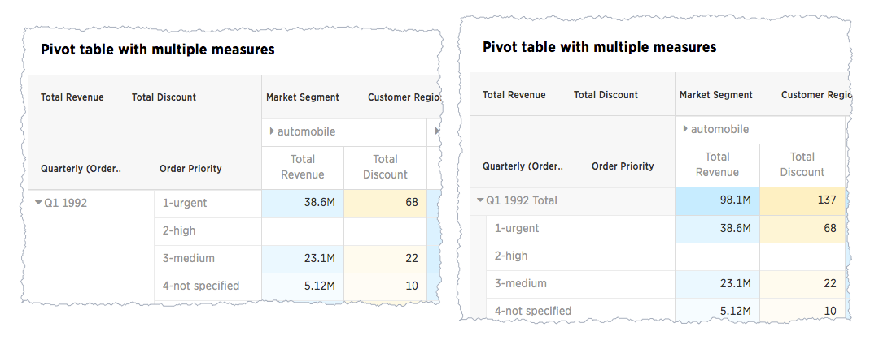
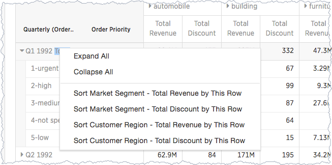
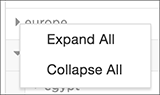
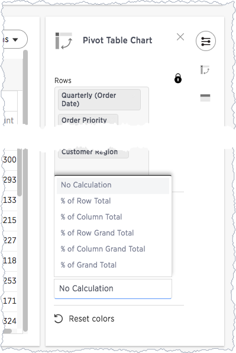
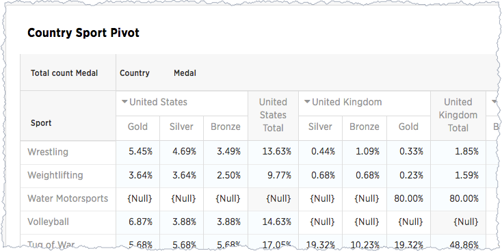
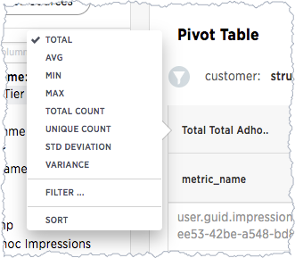
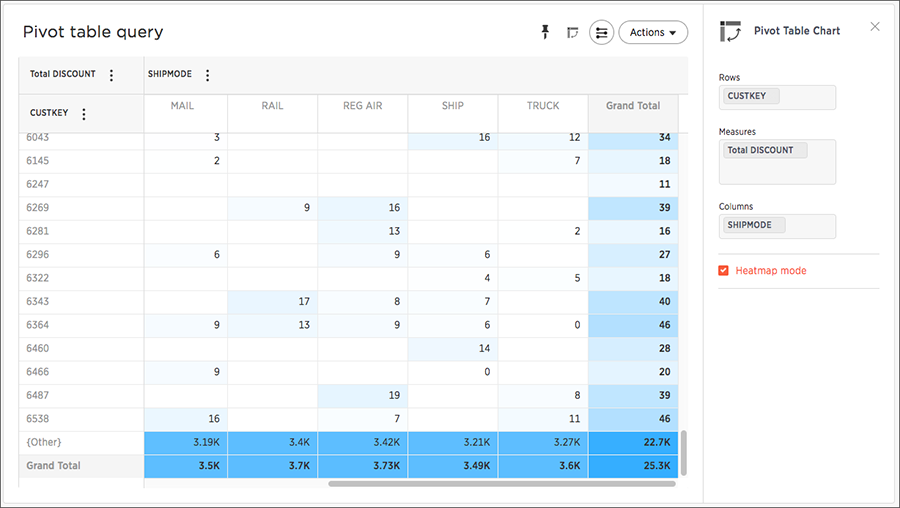

Pivot table last_updated: tbd summary: "A pivot table is a chart type." sidebar: mydoc_sidebar permalink: /:collection/:path.html — Creating a pivot table enables exploring alternate visualization of data in a wide table. It is useful especially when improve data display when some data is best viewed horizontally, while others, vertically. Pivot tables are a chart time table that use a drag-and-drop interface.  If a Pivot Table is available for your answer, you see this type of visualization as an option under the visualization. Add rows, measures, and columns to the search bar:  You can restructure your pivot table by moving these values under Configure Chart or by dragging and dropping column headings on the table itself. If you right-click a row heading, the system displays a contextual sort menu:  Expanding or contract columns and rows Click a column or row to expand it. Additionally, you can expand or collapse all by right clicking the arrow on the top left of a cell.  When you pin a pivot table to a pinboard, it will retain your expansion settings. Display totals You can show % Row Grand Total and, % of Column Grand Total, or % of Grand Total on pivot tables. Grand totals aggregate data of the entire pivot grid. They show values summarized across all available data.  You only see 100% value when grand total rows is enabled. This is because when it is disabled, the rows and columns they have no parental total column and the percentage cannot be calculated. All intermediate total (columns or rows) display the percentage values calculated with respect to their parent. For each inner summary (column or row) the parental total values are assumed to be 100% internally. To see the total column make sure you also have Pivot Summaries checked.  Format row headers For row headers, you can switch between the default view and a more compact (tree) layout: From the header menu users, change the type of total shown for an aggregated measure:  You can also Remove a headline. Heatmap of large contributors The heatmap functionality allows you to see which measures contribute more than others (heat) within the table.  Toggle on the Heatmap mode found under Configuration Options to add color coordination to your data. Pivot table limitations The pivot table chart type has these limitations: Only the first 10,000 data values are used. If you would like to increase this limit, please contact ThoughtSpot Support. Pivot table is not available if the dataset contains more than 100,000 rows. Cardinality is not configurable. Show underlying data menu is unavailable. Conditional formatting is not functional.